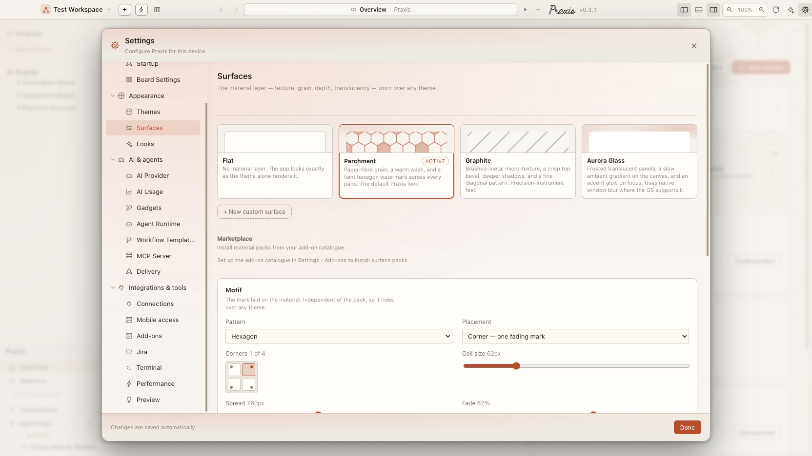
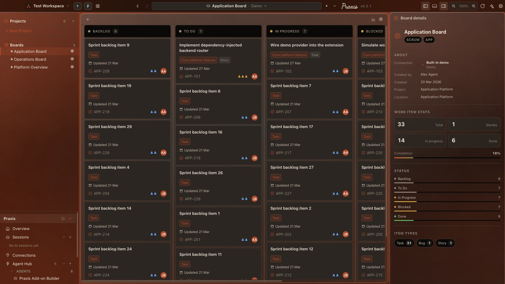
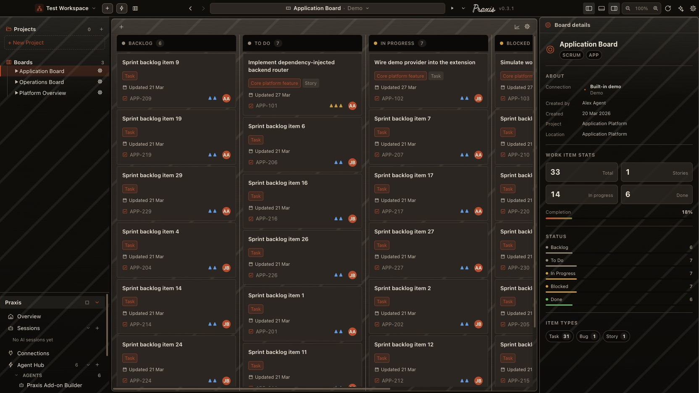

Flat
flat · defaultThe no-op. Every surface token stays inert; the app looks exactly as it does today. Always first in the gallery.
light + darkPhase 1
Praxis · Design system · Implementation plan
A premium material layer — textures, patterns, translucency, glow — that sits on top of the theme you already picked. Not more color themes. A second, orthogonal axis that composes with every one of them.
Where it stands now · 23 Sep 2026
The surface axis is in: packs, material tokens, textures, the motif, and a settings page to pick and tune them. These are the screens as they are today.



Screenshots from Praxis desktop v0.3.1 (today's main) · the rest of this page is the original write-up, kept as it was. New: Praxis on Your Phone.
The default Praxis experience is premium. New installs open on the Praxis theme with the parchment surface pack active — not flat. Phase-1 packs ship GA (no feature flag). On upgrade, only profiles that never touched appearance settings are moved to parchment; anyone who has customised keeps their current look, and flat stays as the one-click opt-out. See §06 and §10.
The surface layer is designed to slot into the existing machinery without disturbing it. Quick recap of what is already there.
<html>, set by themes.ts: data-mode="light|dark" (surface + text ramp), data-accent="violet|blue" (accent hue), and data-theme="praxis-dark|github-light|…" (a complete named palette). They compose; there are no duplicated 4-way blocks.theme.css — --bg, --bg-elevated, --bg-sunken, --border, --text, --accent, … redefined per [data-theme] / [data-mode] block. Components only ever read tokens.applyThemePreference(themeId, pref) resolves system mode, picks the matching variant, calls applyTheme() which sets the attributes, writes localStorage (tm-theme-id), and dispatches tm-theme-changed. main.tsx replays it before React mounts so there is no flash.AppearanceSettings in packages/core/src/config/appSettings.ts holds themeId, themeMode, installedThemeIds, and customThemes[]; the settings doc is shared with the main process.SettingsPage.tsx → ThemesSection renders a gallery of ThemePreviewCards and a full CustomThemeEditor with import / export / duplicate.Everything below adds one axis, one token group, one apply function, one settings sub-panel, and a handful of CSS refactors on structural surfaces. Nothing in the color system changes.
A surface pack describes material, never color. It answers "what is this panel made of and how does light hit it?" — paper fiber, brushed metal, frosted glass, blueprint vellum — while the active theme keeps deciding every hue.
--bg, --text, --accent valueResult: Parchment × GitHub Light, Aurora Glass × Praxis Dark, Graphite × Nord are all valid, and each reads correctly because the pack's assets tint themselves from the live theme tokens.
One new attribute on <html>: data-surface, from "flat" (the inert CSS baseline — every token a no-op) to "aurora-glass". flat is only the fallback; DEFAULT_APP_SETTINGS ships parchment (§06). Plus three user dials written as inline custom properties so they multiply into the pack: --surface-intensity (0–1), --surface-translucency (0/1 gate), --surface-texture (0/1 gate).
A new custom-property group, defined inert on bare :root so an un-set pack is a guaranteed no-op, then overridden per [data-surface] block. Components read these exactly like they read color tokens today.
| Token | Inert default | Purpose |
|---|---|---|
--surface-app-bg-image | none | Layered background behind the whole window (canvas vignette, ambient gradient) |
--surface-panel-bg-image | none | Layered background for elevated panels (sidebar, editor pane, dialogs) |
--surface-bg-blend | normal | background-blend-mode for every layered background stack — app and panel |
--surface-panel-opacity | 1 | Panel fill translucency; folded through color-mix so the theme color still drives the hue |
--surface-panel-blur | 0px | backdrop-filter blur radius — glass |
--surface-panel-saturate | 1 | Backdrop saturation boost that sells the frosted look |
--surface-panel-border | 1px solid var(--border) | Per-pack edge — bevel highlight, gradient hairline, none |
--surface-panel-shadow | var(--shadow-panel) | Depth; packs can deepen or flatten |
--surface-texture-image | none | Tiling grain / fiber / pattern drawn on a dedicated ::after layer |
--surface-texture-opacity | 0 | Strength of that layer — the main --surface-intensity multiplicand |
--surface-texture-blend | overlay | mix-blend-mode so one asset works on light and dark grounds |
--surface-accent-glow | none | Optional box-shadow glow applied to focus rings / primary buttons |
--surface-radius-boost | 0px | Added to component radii for softer, more "premium" corners |
/* Guaranteed no-op: every surface token resolves to "do nothing". */ :root { --surface-app-bg-image: none; --surface-panel-bg-image: none; --surface-bg-blend: normal; --surface-panel-opacity: 1; --surface-panel-blur: 0px; --surface-panel-saturate: 1; --surface-panel-border: 1px solid var(--border); --surface-panel-shadow: var(--shadow-panel); --surface-texture-image: none; --surface-texture-opacity: 0; --surface-texture-blend: overlay; --surface-accent-glow: none; --surface-radius-boost: 0px; --surface-intensity: 1; --surface-translucency: 1; --surface-texture: 1; } :root[data-surface="parchment"] { --surface-app-bg-image: radial-gradient(130% 90% at 15% 0%, var(--accent-soft), transparent 55%); --surface-texture-image: url("data:image/svg+xml;base64,…paper-fiber…"); --surface-texture-opacity: calc(0.5 * var(--surface-intensity) * var(--surface-texture)); --surface-texture-blend: soft-light; --surface-panel-border: 1px solid color-mix(in srgb, var(--border) 70%, var(--accent) 8%); --surface-radius-boost: 1px; }
Roughly a dozen structural rules in theme.css change — the ones that today do a flat background: var(--bg*) on a full-bleed surface: body / .window-root, .pane-sidebar, .pane-main, .pane-aux, .panel-shell, .titlebar, dialog shells, and the canonical rounded-panel from CLAUDE.md. Cards and rows are untouched.
.pane-main {
/* color still owns the hue; image layers ride on top */
background-color: var(--bg-elevated);
background-image: var(--surface-panel-bg-image);
background-blend-mode: var(--surface-bg-blend);
border: var(--surface-panel-border);
box-shadow: var(--surface-panel-shadow);
border-radius: calc(var(--radius-md) + var(--surface-radius-boost))
calc(var(--radius-md) + var(--surface-radius-boost)) 0 0;
}
.pane-sidebar, .pane-main, .pane-aux, .panel-shell { position: relative; }
.pane-sidebar::after,
.pane-main::after,
.pane-aux::after,
.panel-shell::after {
content: "";
position: absolute;
inset: 0;
pointer-events: none;
z-index: 0; /* behind content, above the fill */
background: var(--surface-texture-image) repeat;
opacity: var(--surface-texture-opacity);
mix-blend-mode: var(--surface-texture-blend);
}
/* children need an explicit stacking context so they clear the ::after */
.pane-main > * { position: relative; z-index: 1; }
color-mix.pane-sidebar {
background-color: color-mix(in srgb,
var(--bg-sunken) calc(var(--surface-panel-opacity) * 100%),
transparent);
backdrop-filter: blur(calc(var(--surface-panel-blur) * var(--surface-translucency)))
saturate(var(--surface-panel-saturate));
}
Because opacity is applied via color-mix against the theme's own --bg-sunken, a glass pack over Praxis Dark frosts warm charcoal and a glass pack over Nord frosts arctic blue — automatically.
The assets are what make it feel premium rather than gimmicky. Two families, both theme-aware.
surfacePatterns.ts holds the library — hexagon, grid, dot-grid, triangle, diagonal, weave, topo, none. Each entry knows its seamless tile geometry and draws itself at an arbitrary ink and stroke weight.pattern: { id: 'hexagon', scale: 124, opacity: 0.07, ink: 'accent' }. applySurfacePack renders it into --surface-watermark-*, which every pane and the splash already read. Adding a material means adding a library entry — never a new [data-surface] block, and never a change to the panes.tm-theme-changed — a data URI cannot carry a var(), so the colour is baked in and refreshed instead.::before layer behind the pane content, so a pattern can never erode text contrast.default-src 'self' with no img-src, so every data: SVG — pattern and grain alike — was silently blocked: computed styles were correct, nothing ever painted. This is why all six packs looked alike no matter how the values were tuned.img-src 'self' data:. Data images are inert (a CSS background or <img> never executes script) and no remote origin is permitted by any directive. A surfacePacks.spec.ts test now decodes the live tile through Image() so a regression fails loudly instead of silently.@1x + @2x — not synthetic noise. This is what makes the default look feel crafted rather than CSS-generated.mix-blend-mode: soft-light|overlay at low opacity. Where a texture genuinely needs to differ per mode, key it on :root[data-mode="dark"] [data-surface="x"].@1x tile is a static import so Vite fingerprints and inlines it into the initial load, @2x preloaded right after paint.packages/frontend/src/assets/surfaces/ and are fetch-ed the first time their pack becomes active, then cached. Only the active pack's tiles are ever downloaded, so switching away from the default costs one pack's worth (~40–80 KB), not the whole set.Total surface texture assets: ~300–400 KB across all bundled packs. Only Parchment's @1x tile (~25–35 KB) enters the initial bundle; everything else is lazy-loaded per active pack. Hard per-pack ceiling: ≤ 90 KB across both DPIs.
Two levels. The CSS level ships first and works everywhere. The native level makes it genuinely translucent to the desktop behind, and needs main-process changes.
Layered gradients, inner shadows, and texture ship in phase 1 (this is how Parchment reads). Phase 2 adds backdrop-filter blur within the window — the sidebar frosts the editor pane behind it — with no Electron change. Together this already looks like a polished "acrylic-ish" UI and is the safe fallback for the glass packs on every OS.
| Platform | Mechanism | Notes |
|---|---|---|
| macOS | new BrowserWindow({ vibrancy: 'under-window', transparent: true, backgroundColor: '#00000000' }) + win.setVibrancy() | Live-togglable. Transparent windows lose the native drop shadow & some corner rounding — re-add in CSS. |
| Windows 11 | backgroundMaterial: 'acrylic' | 'mica', togglable via win.setBackgroundMaterial() | Mica tints from the desktop wallpaper; acrylic blurs. Pre-22H2 falls back to opaque. |
| Linux | Compositor-dependent; no reliable API | Feature-detect → always fall back to Level A. |
// windowIpc.ts
ipcMain.handle('window:setSurfaceVibrancy', (_e, mode: 'off' | 'glass') => {
if (process.platform === 'darwin') win.setVibrancy(mode === 'glass' ? 'under-window' : null);
else if (process.platform === 'win32') win.setBackgroundMaterial(mode === 'glass' ? 'acrylic' : 'none');
return { applied: process.platform !== 'linux' && mode };
});
Transparent root: the renderer's body / .window-root must become transparent for a glass pack and re-opaque otherwise — driven by --surface-panel-opacity. Perf: backdrop-filter over large scrolling regions is expensive — restrict blur to sidebar, titlebar, and dialogs; never the scrolling editor pane. OS settings: honor prefers-reduced-transparency — drop straight to opaque. First paint: main.tsx must set data-surface from localStorage before mount, same as theme, or glass flashes solid.
Additive changes to AppearanceSettings. Fresh installs default to parchment; upgrades are handled by the migration rule below.
export interface AppearanceSettings {
// … existing: showBrandArtwork, priorityColors, themeId, themeMode,
// installedThemeIds, customThemes
surfacePackId: string; // DEFAULT_APP_SETTINGS → 'parchment'
surface: {
intensity: number; // 0..1, default 1
translucency: boolean; // gate Level A/B blur, default true
texture: boolean; // gate grain layers, default true
windowVibrancy: boolean; // phase 3, default false
};
installedSurfacePackIds: string[];
customSurfacePacks: Array<{
id: string; name: string; description: string;
basePackId?: string; // inherit + override
tokens: Record<string, string>; // validated --surface-* only
}>;
}
readSurfacePack() / readCustomSurfacePacks() validators mirroring readCustomThemes() — whitelist --surface-* keys, reject arbitrary CSS, clamp numbers.DEFAULT_APP_SETTINGS.appearance (surfacePackId: 'parchment') and the mergeAppSettings branch.ticketManager.d.ts types follow automatically from core.The settings reader can already tell a default-shaped profile from a customised one. When raw.appearance.surfacePackId is absent (pre-feature profile):
| Existing profile state | Migrated surfacePackId |
|---|---|
No appearance block at all, or every appearance field still equals its default (theme never touched) | parchment — they get the new signature look |
themeId, themeMode, customThemes, or priorityColors differ from defaults (user has been in Themes) | flat — their look is preserved; Parchment is one click away in Settings |
New installs write DEFAULT_APP_SETTINGS directly, so they start on parchment unconditionally. flat is always a selectable pack, so the migration is fully reversible by the user.
Each is a [data-surface] block in surfaces.css plus a SurfacePackDefinition (id, name, description, supports: ('light'|'dark')[], glass?: boolean, phase, preview params, asset refs). Every pack is designed to look right over the Praxis families first, then verified against GitHub / Nord / Xcode.
The no-op. Every surface token stays inert; the app looks exactly as it does today. Always first in the gallery.
Paper-fiber grain on panels, a warm vignette on the canvas, 1 px softened corners, edge tinted a touch toward the accent. Made for Praxis / Humanist / Anthropic — and the out-of-the-box look for every new install.
Brushed-metal micro-texture, a crisp 1 px top bevel highlight, deeper shadows. Precision-instrument feel. Sings over GitHub / Xcode / Rider.
A faint dot-grid / drafting rule on the canvas only; panels stay clean and opaque. Procedural SVG, tinted from tokens. Reads as "engineering workspace".
Translucent frosted panels, backdrop blur, soft accent glow on focus, a slow ambient gradient on the canvas (motion-gated). Full effect with phase-3 vibrancy; degrades to faux-depth.
Heavy film grain, high-contrast vignette, flattened shadows. Dark-only — the gallery hides it under a light theme (or offers a one-click switch to the family's dark variant).
Preview cards in Settings render the pack's CSS over the currently active theme's colors, so what you see in the gallery is the real combination, not a generic mock.
Lives inside the Themes screen, not a new top-level category — it "works with the theme", so it sits with the theme.
ThemesSection: a row of SurfacePackCards (reusing the .theme-gallery-card idiom) rendered over the live theme tokens.window.ticketManager.window.supportsVibrancy() is true — a Window blur toggle.tm-surface-changed event; no reload.CustomThemeEditor. Import validates against the --surface-* whitelist.ThemeSwitcher.tsx for people who change it often.window.ticketManager.window.supportsVibrancy() resolves true.export function applySurfacePack(packId: string, opts: SurfaceOpts): SurfacePackDefinition {
const pack = findSurfacePack(packId) ?? findSurfacePack('flat')!;
const root = document.documentElement;
root.setAttribute('data-surface', pack.id);
root.style.setProperty('--surface-intensity', String(opts.intensity));
root.style.setProperty('--surface-translucency', opts.translucency ? '1' : '0');
root.style.setProperty('--surface-texture', opts.texture ? '1' : '0');
localStorage.setItem('tm-surface-id', pack.id);
localStorage.setItem('tm-surface-opts', JSON.stringify(opts));
if (opts.windowVibrancy) void window.ticketManager.window?.setSurfaceVibrancy(
pack.glass ? 'glass' : 'off');
window.dispatchEvent(new CustomEvent('tm-surface-changed', { detail: pack.id }));
return pack;
}
main.tsx gains one line before React mounts: replay data-surface + the three dial properties from localStorage, exactly like the theme bootstrap.
@1x tile is in the initial bundle (it is the default). Every other pack's tiles lazy-load on activation (≤ 90 KB/pack across both DPIs); that first switch shows a brief un-textured frame, then the tile fades in.aurora-glass) run on transform/opacity only, pause on prefers-reduced-motion and when the window is blurred/hidden.::after per shell (4 total), not per card.prefers-reduced-transparency and prefers-reduced-motion — both collapse the pack to its opaque, static form via @media guards in surfaces.css.parchment is now the shipped default, an assertion that samples the effective composited background behind --text for each bundled pack × each bundled theme, failing below WCAG AA (4.5:1), gates the release — not just CI hygiene. parchment × praxis-light and parchment × praxis-dark are the two combinations that must never regress. Textures on panels stay under the breaching opacity — this is why patterns live on the canvas.role="radio" in a radiogroup, like the theme cards.appearanceSettings.spec.ts: the theme-gallery screenshot gains a surface row; add a surface-gallery snapshot.surfacePacks.spec.ts: apply each bundled pack over two base themes, assert data-surface, assert a known --surface-* computed value, screenshot the shell.readCustomSurfacePacks() rejects non-whitelisted keys / out-of-range numbers; the migration rule — default-shaped profile → parchment, customised profile → flat, new install → parchment.praxis + parchment is the new visual baseline; flat must stay pixel-identical to the pre-feature build (proves the token layer is a true no-op).--update-snapshots across appearanceSettings, projects, gitGraph, shellPolish, … in the landing PR, reviewed by eye rather than trusted.Four phases, each shippable on its own — all four now implemented. No feature flag was needed: every phase ships GA, opaque packs default-on and glass packs one click away. The one deviation from the sketch below: the translucency gate is a data-translucency attribute rather than a --var multiplicand (Chromium drops a backdrop-filter built through nested var + calc).
Pure CSS + assets, no main-process work. surfaces.css, the theme.css refactor, surfacePacks.ts, applySurfacePack, main.tsx bootstrap, data-model fields + the migration rule. Ships Flat, Parchment, Graphite, Blueprint; DEFAULT_APP_SETTINGS flips to parchment. Settings: pack gallery + Intensity + Texture toggle. Snapshot regen (theme-gallery, 5× projects) landed.
Shipped: new install opens on Praxis + Parchment; customised upgrades stay on flat (migration rule, unit-tested); flat is inert by construction; contrast guard green for both Praxis variants. 9 core tests + 5 e2e (surfacePacks.spec.ts). Textures shipped as SVG-turbulence placeholders in this phase; the swap to photographic WebP tiles (paper-fibre, brushed-metal, frost, film-grain, each 1x/2x) has since landed.
The color-mix opacity path on .pane-sidebar / .pane-main / .pane-aux / .titlebar, in-window backdrop-filter on the sidebar + titlebar only, prefers-reduced-transparency collapse, and a transform-only ambient ::before cloud on .shell (motion-gated, paused on window blur). Ships Aurora Glass and Noir — GA, no flag.
Shipped: the translucency gate is a data-translucency attribute, not a --var — Chromium silently drops a backdrop-filter whose value routes through nested custom-property + calc indirection, so the glass packs carry literal values and the attribute switches them. The gate collapses Aurora to a fully opaque surface. Flat stays a byte-for-byte no-op. Settings: Translucency toggle, gated to glass packs. e2e: Aurora frosting + dial-collapse, Noir dark-only.
Visual retune. Screenshotting the real app showed every pack — Phase 1 included — reading as near-identical to plain dark: the panes tile the whole window, so canvas-based effects were fully occluded, and the grain ::after sat above the text so it had to stay near-invisible. Fixed by moving the material onto the panels: a new --surface-panel-tint-layer wash (behind the content), the grain layer dropped behind the content too, and per-pack values pushed until each pack is unmistakable — Parchment warm paper, Graphite cool bevel + drop shadow, Blueprint a full drafting grid, Aurora a bright accent-lit glass, Noir a hard vignette. Re-verified by screenshot for all six.
platformSupportsVibrancy() (macOS / Win11 22000+), setWindowVibrancy(), the window:supportsVibrancy + window:setSurfaceVibrancy IPC, WindowIpc contract + preload bridge. createMainWindow reads the persisted surface.windowVibrancy and opens transparent + vibrancy:'under-window' (macOS) / backgroundMaterial:'acrylic' (Win11). applySurfacePack calls the bridge and sets data-vibrancy='glass' → transparent-root + shadow / corner recovery CSS. No feature flag — glass packs are GA.
Shipped: Window-blur toggle appears in Settings only when supportsVibrancy() resolves true, and only enables for a glass pack with Translucency on. Linux + pre-22H2 Windows fall through to the Phase-2 faux-depth path. e2e: toggle presence + persistence on a vibrancy-capable OS.
CustomSurfaceEditor — friendly dials (panel opacity / blur / glow / texture / corner / blend) that write a validated --surface-* token map, plus Export / Import JSON. registerCustomSurfacePacks() carries tokens + basePackId; applySurfacePack applies a custom pack's tokens inline (no stylesheet block) and derives --surface-backdrop from its blur. "New custom surface" button + per-card edit affordance in the Surface section.
Shipped: a user can build, apply, export and re-import a pack; import + core's reader both whitelist --surface-* keys. Marketplace list deferred. e2e: create → apply → reload round-trip. Core: basePackId + token-whitelist unit tests (18 total).
| File | Change |
|---|---|
| core/src/config/appSettings.ts | Add surface fields to AppearanceSettings, defaults, validators, mergeAppSettings branch, migration |
| frontend/src/surfacePacks.ts (new) | Pack definitions, registry, findSurfacePack, registerCustomSurfacePacks, asset imports |
| frontend/src/surfaces.css (new) | :root inert tokens, [data-surface] blocks, @media reduced-* guards |
| frontend/src/theme.css | Refactor ~12 structural surface rules to read --surface-*; add shared ::after texture layer; @import surfaces.css |
| frontend/src/themes.ts | applySurfacePack, getInitialSurfaceId, compose into applyThemePreference, tm-surface-changed |
| frontend/src/main.tsx | Replay data-surface + dial props from localStorage before mount; re-apply from settings |
| frontend/src/SettingsPage.tsx | SurfacePackCard, surface block in ThemesSection, dials, later CustomSurfaceEditor |
| frontend/src/ThemeSwitcher.tsx | Optional quick surface dropdown |
| frontend/src/assets/surfaces/ (new) | Seamless WebP texture tiles (@1x/@2x) + procedural SVG patterns. Parchment's tile is a static import; the rest are referenced by URL for runtime fetch |
| electron-app/src/main/windowIpc.ts + index.ts | (P3) transparent window opts, setVibrancy/setBackgroundMaterial, window:setSurfaceVibrancy |
| electron-app/src/preload/index.ts + frontend ticketManager.d.ts | (P3) expose window.setSurfaceVibrancy + supportsVibrancy |
| electron-app/e2e/appearanceSettings.spec.ts + surfacePacks.spec.ts (new) | Gallery snapshot update, per-pack visual specs, contrast gate |
| electron-app/e2e/**/*.spec.ts-snapshots/ (bulk) | One-time --update-snapshots across the suite — the default shell now carries the Parchment texture |
Everything needed to start Phase 1 is settled.
| Question | Decision |
|---|---|
| Default for new installs | Ship parchment on as the signature Praxis look. Phase-1 packs GA; upgrade migration preserves customised profiles (§06). |
| Translucency / vibrancy scope | Full native in P3. Faux-depth blur in P2, real OS vibrancy in P3 on macOS + Win11, automatic faux-depth fallback on Linux / old Windows. Accept the transparent-window tradeoffs, recover shadow + rounding in CSS. |
| Asset strategy | Rich raster. High-detail photographic texture tiles (~300–400 KB total across packs). Geometric patterns stay procedural SVG. Only Parchment's @1x tile is bundled; the rest lazy-load per active pack, ≤ 90 KB/pack (§04). |
| Custom / marketplace packs | Deferred past P3. Bundled packs only through P3; custom editor + import/export + marketplace become a P4 follow-up. |
| User-facing name | "Surfaces." "Surface" pack, "Surfaces" section in Settings — matches data-surface / --surface-* and doesn't collide with "Themes". |